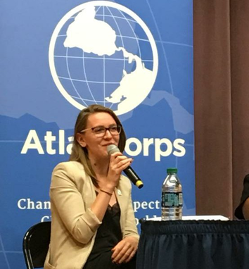

This website is to introduce you to the two main reasons I recommend submitting an application.
But first, let's go over the eligibility requirements. In order to enter the competition, you must:
Click on the links below to explore the reasons I urge you to apply for Atlas Corps:
[Explore Reason #1]___________[Explore Reason #2]